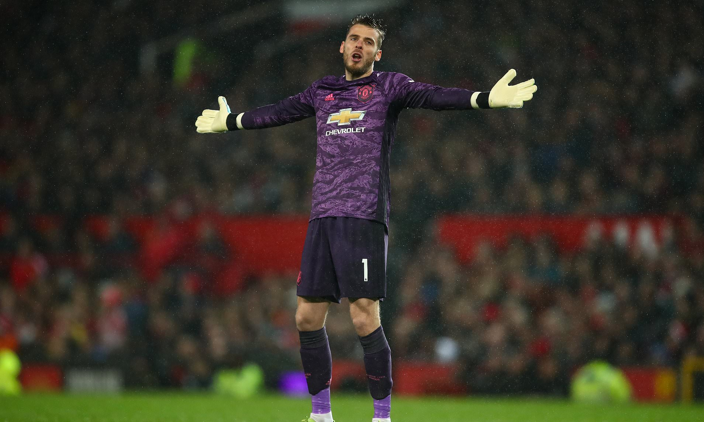

Strikers
Midfielders
Defenders
Goalkeepers
The Old Goat's Like Ronaldinho etc..
The Most Embarrassing moments in soccer
Goalkeepers 2019-2020
This is about the greatest saves for the soccer season 2019-2020.
